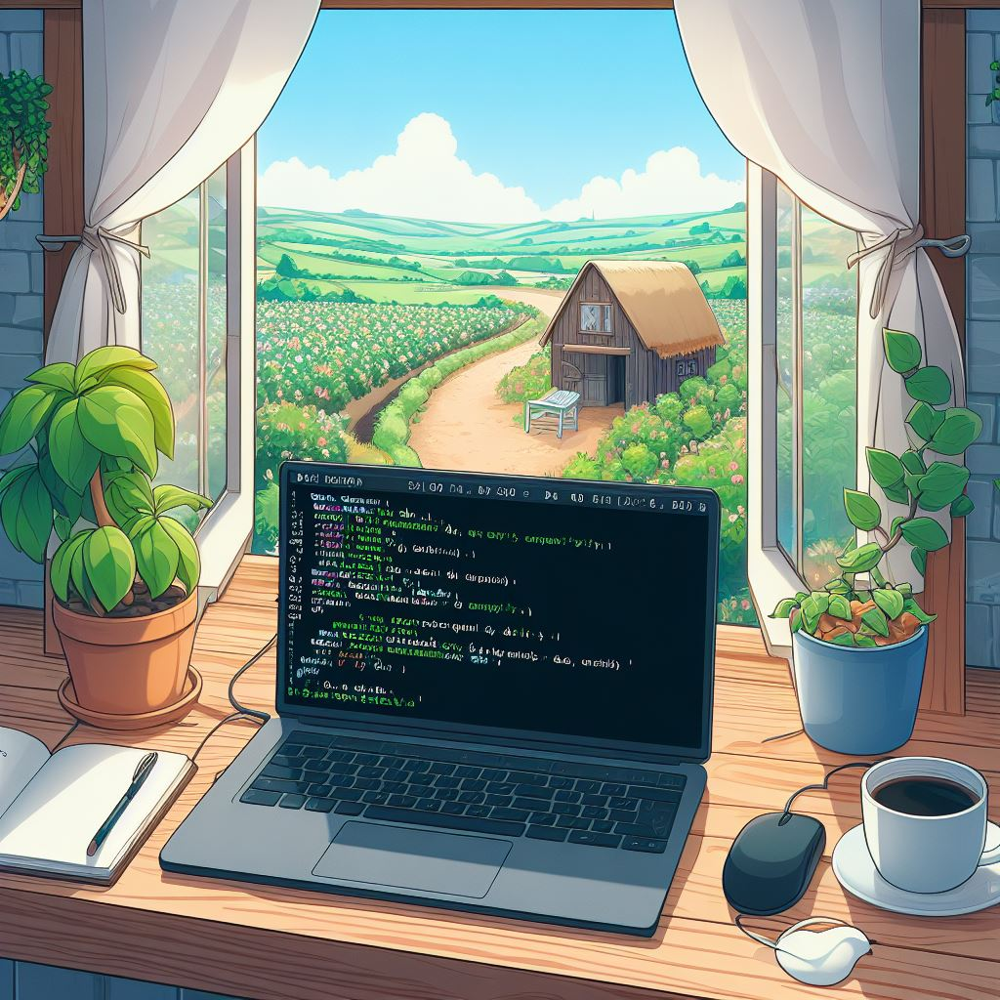
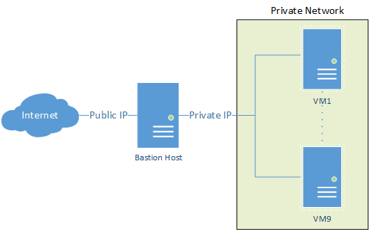
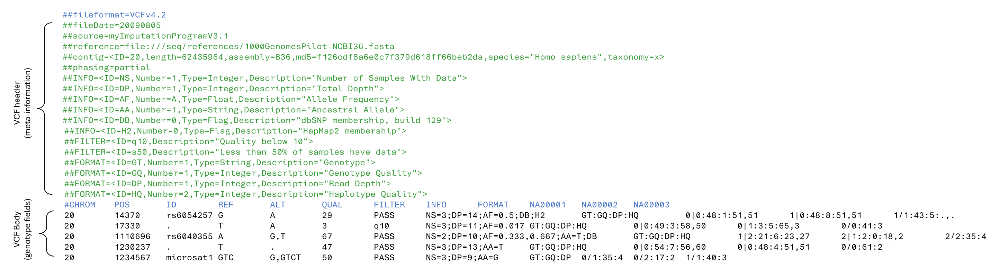

Bash

Using {tee} to log command outputs.
When working in a Bash terminal and you want to log the output of a command for future reference, the tee command is a handy tool, especially in multi step analyses. Here’s a quick tip on how to use it effectively:
Basic Usage: To log the output of a command and simultaneously view it on the terminal, use the following format:
my_command | tee my_log.txtReplace my_command with your actual command and my_log.txt with the desired log file name.
Appending to Existing Logs: To append output to an existing log file (useful for logging multiple command or runs of the same command), use the -a option with tee:
my_command | tee -a my_existing_log.txtCapture standard error aswell: By default tee captures standard out (stdout) and saves it to file whilst also printing to screen. However if you want to capture standard error (stderr) as well as stdout just add 2>&1 after your command before you pipe to tee:
my_command 2>&1 | tee my_log.txtUsing {basename} in Bash for File Name Extraction
In Bash, you can use the basename command to extract the file name from a given file path. This is particularly useful when you’re working on tasks like data processing pipelines or automation scripts and need to isolate the file’s name from its full path.
Basic Syntax:
basename [PATH]Usage Example: Suppose you have the following file path: /path/to/your/file.txt. Using the basename command as follows:
basename /path/to/your/file.txtYou will obtain just the file name file.txt as output:
If you also want to remove the trailing suffix simply add the suffix as a second argument to the end of the command:
basename file.txt .txtWhich in this example will return file
Streamling File Transfer via a Bastion Host

Accessing private servers through a bastion host, like AWS private cloud, and transferring local files doesn’t have to be a complex process. With a straightforward command utilising scp and the ProxyJump feature, you can seamlessly accomplish this task. Assuming your SSH keys are configured correctly on your local machine, here’s how to automate the transfer to the endpoint private server via the public-facing bastion host.
scp -J <user-name>@<Public-IPv4-DNS> \
<file-to-transfer> \
<user-name>@<IP-address>:/path/for/remote/fileFor systems where ProxyJump isn’t available, you can opt for the ProxyCommand method instead.
scp -o 'ProxyCommand ssh <user-name>@<Public-IPv4-DNS> -W %h:%p' \
<file-to-transfer> \
<user-name>@<IP-address>:/path/for/remote/fileIt’s worth noting that while both methods facilitate the transfer, ProxyJump is recommended over ProxyCommand as it adds an extra layer of encryption to the traffic, enhancing security during file transfers.
Extract Data Lines From a VCF File

Visual inspection 🔍 of the data lines (i.e. genotype fields) of VCF file is often impeded ⛔ by the large number of meta-information lines at the top. A simple sed command that looks for the mandatory body header line can get your past this hurdle 🚧
sed -n '/#CHROM/,$p' filename.vcfIn short this command searches for the pattern ‘#CHROM’ and then starts printing to the screen until the end of the file. Pipe this into a head command (| head) and you now have a quick and simple way 🟢 to inspect the start of a VCF file.